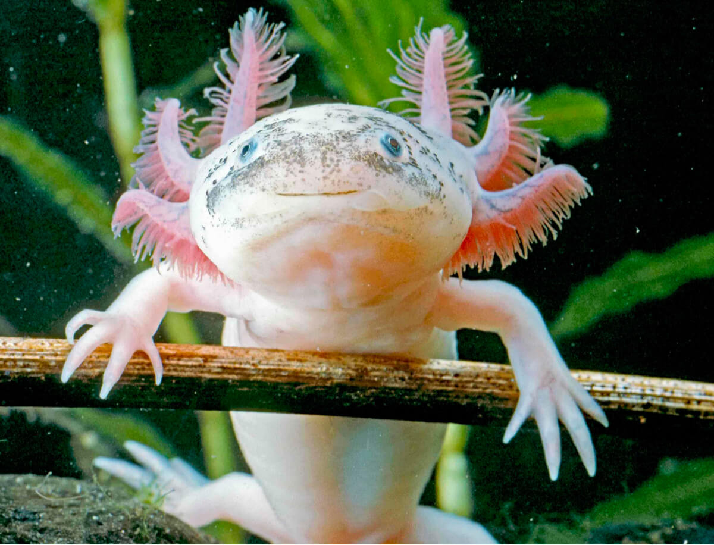
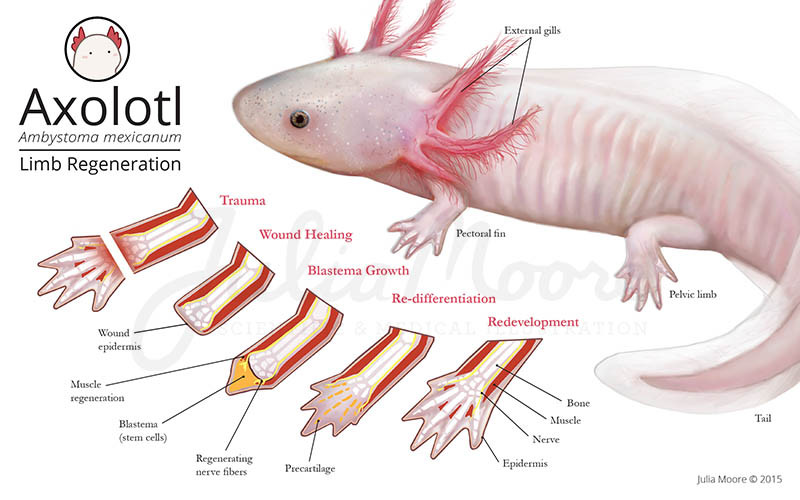
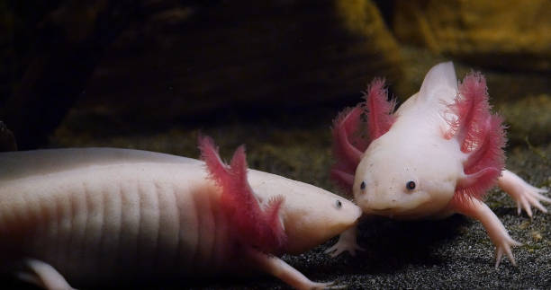

Axolotl mexický (Ambystoma mexicanum) je jedinečný vodní obojživelník, známý svými vnějšími žábrami a schopností regenerovat některé části těla.
Axolotlové jsou citliví především na kvalitu vody, její teplotu a nevhodné podmínky v akváriu.

Péče o axolotla není založena na česání nebo výcviku, ale především na udržování správných podmínek v jeho vodním prostředí.
Množství a četnost krmení se přizpůsobují věku a velikosti konkrétního jedince. Nesnědené zbytky potravy je potřeba z akvária odstranit.
Axolotl nepotřebuje výcvik jako pes. Jeho prostředí by však mělo být dostatečně zajímavé a bezpečné. Vhodné úkryty, rostliny a prostor k přirozenému pohybu mu pomáhají cítit se bezpečně a omezují stres.
Axolotl je vhodný pro:
není vhodný pro:
Je důležité si uvědomit, že axolotl může při správné péči žít přibližně 10–15 let. Jeho pořízení by proto mělo být vždy dobře promyšleným rozhodnutím.

Pokud se chcete o axolotlech dozvědět více, doporučujeme následující odborné zdroje: